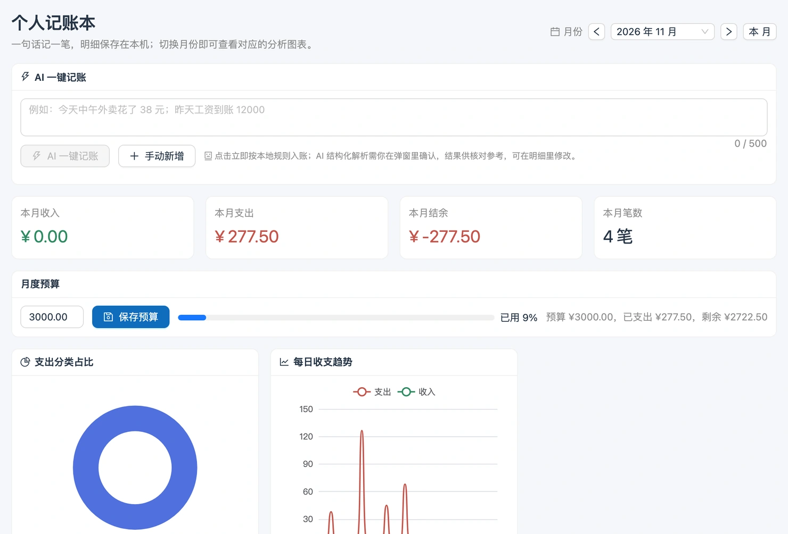

说清楚，你想完成什么。
描述文件、规则和希望得到的结果。可以先做一个简单版本，再逐步补上你的工作习惯。
“做个销售统计工具，可以按地区和产品切换，并导出 Excel。”
01 / 不是固定模板，是你的工具
看看五个具体的想法，
如何变成真正用得上的工作区。

PERSONAL FINANCE
从一句需求开始
做一个记账工具，支持分类、月度趋势、预算和导出。
收支明细、月度趋势和分类预算放在同一个工作区。需要调整字段或统计方式？回到对话，继续修改这件工具。
输入需求 → 生成与预览 → 操作与导出
这是可创建的工具示例，并非 App 固定内置模块。
02 / 从需求到复用
描述文件、规则和希望得到的结果。可以先做一个简单版本，再逐步补上你的工作习惯。
“做个销售统计工具，可以按地区和产品切换，并导出 Excel。”
用表单调整参数，在表格里筛选，在图表中查看分布。预览工具，确认交互和结果符合预期。
工具保存在本地，按项目整理。需要新字段或新规则时，直接从工具发起对话，继续迭代。
03 / 为真实工作准备
它不是远程办公系统，也不是文件云盘。
它是你本机上的个人工具桌面。
本地文件输入、本地工具和结果历史。外部模型仍会接收你发送的对话及明确读取的相关内容，请留意敏感信息。
常用参数不用反复解释。表单、筛选、表格、图表和预览，让同一个工具适应下一次任务。
查看进度、取消后续批量任务，打开或保存导出结果。工具应使用独立输出目录，保留原始输入。
修复后手动重试，覆盖前明确确认。ZIP 导入只校验、不自动运行；第三方工具仍应来自可信来源。
还有几个问题
不是。这里展示的是为官网制作的真实示例工具，使用合成数据录制。Calabash 的核心是让 AI 按你的需求创建和修改工具，而不是提供几个固定业务模块。
创建和修改工具需要配置外部模型及你自己的 API Key。目前支持 DeepSeek、OpenAI、Anthropic 和通义千问。工具与结果保存在本机，但模型请求可能发送对话和相关文件内容；“本地运行”不代表所有数据都不出设备。
需要在设置页导入可信的 FFmpeg 能力插件 ZIP。演示环境已经预先安装插件。它不随主 App 内置，不会自动下载；目前不提供转写、字幕生成或 OCR 能力。
目前处于体验阶段，官网尚未提供公开下载地址。已验证的构建面向 macOS Apple Silicon；正式签名与公证仍待完成。安装包准备好后会更新入口。
从你每天重复的那件事开始。